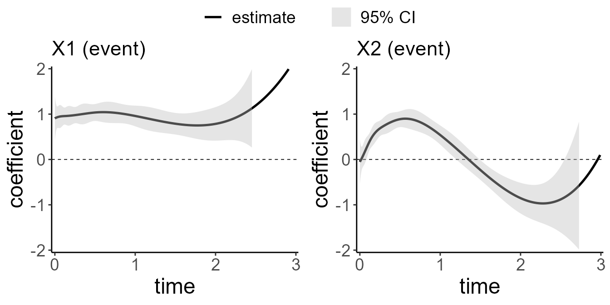
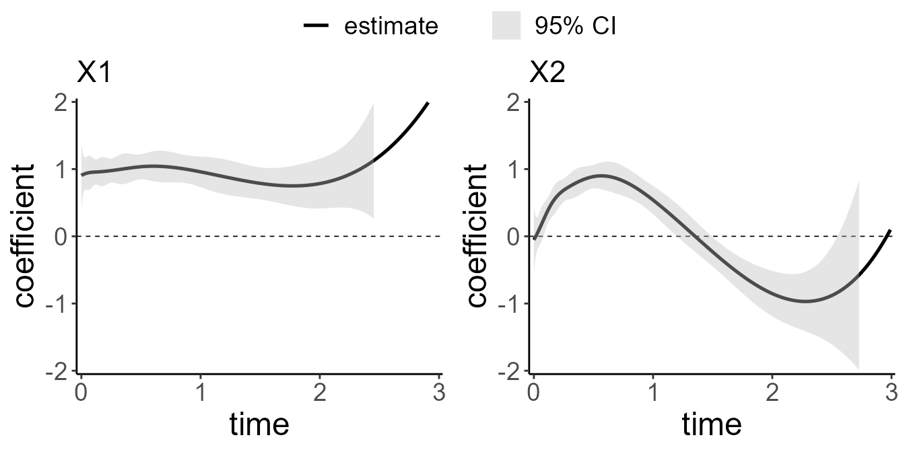
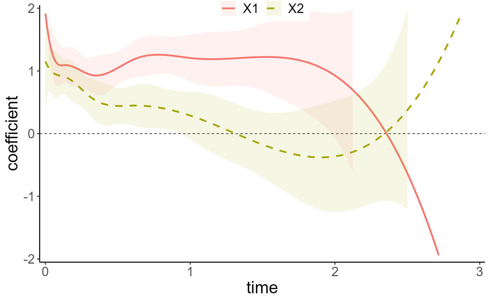
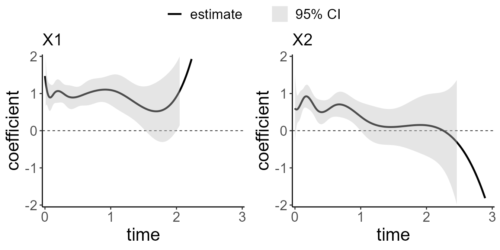

Introduction:
surtvep is an R package for fitting penalized Newton’s
method for the time-varying effects model using mAIC, TIC, GIC as
information criteria, in particular we span the parameter using basis
functions. Utilities for carrying out post-fitting visualization,
summarization, and inference are also provided. In this tutorial we
introduce the use of surtvep through an example
dataset.
Installation:
#Install the package, need to install the devtools packages:
require("devtools")
require("remotes")
remotes::install_github("UM-KevinHe/surtvep", ref = "Lingfeng_test")
#To install with Vignettes:
# install.packages("devtools")
# devtools::install_github("UM-KevinHe/surtvep",build_vignettes =T)Quick Start
The purpose of this section is to give users a general sense of the package. We will briefly go over the main functions, basic operations and outputs. After this section, users may have a better idea of what functions are available, which ones to use, or at least where to seek help.
First, we load the ‘surtvep’ package:
The main functions used in the package are Newton’s method ‘coxtv’ and Newton’s method combined with penalization ‘coxtp’, which we will demonstrate in this section. We load a set of data created beforehand for illustration:
data("ExampleData")
z <- ExampleData$x
time <- ExampleData$time
event <- ExampleData$eventThe command loads an input covariate matrix ‘z’, time-to-event outcome ‘time’ and ‘event’ from this saved R data archive. The saved data set is a simulation data set with continuous outcomes.
We fit the Newton’s method without penalization use the most basic call to ‘coxtv’.
fit.tv <- coxtv(z = z, event = event, time=time)
#> Iter 1: Obj fun = -3.2982771; Stopping crit = 2.8599513e-01;
#> Iter 2: Obj fun = -3.2916285; Stopping crit = 6.4033714e-03;
#> Iter 3: Obj fun = -3.2916034; Stopping crit = 2.5024973e-05;
#> Iter 4: Obj fun = -3.2916034; Stopping crit = 5.6581492e-10;‘fit.tv’ is an object of class ‘coxtv’ that contains all the relevant
information of the fitted model for further use. We do not encourage
users to extract the components directly. Instead, various methods are
provided for the object such as plot and test
that enable us to execute those tasks more elegantly.
We can get the time-varying coefficients by calling the
get.tvcoef method:
beta.tv <- get.tvcoef(fit.tv)
head(beta.tv)
#> X1 X2
#> 0.000178354960296403 0.8190941 -0.07539314
#> 0.000355177544950556 0.8202944 -0.07436044
#> 0.000532422851851532 0.8214929 -0.07332691
#> 0.0011332947259668 0.8255221 -0.06983544
#> 0.00146478440156426 0.8277227 -0.06791732
#> 0.00224849921081871 0.8328625 -0.06340520The first row of beta.tv represents the time-varying
coefficient of x1 and x2 at time 0.00017835.
In order to get the time-varying coefficients on a new time sequence,
we can modify the times argument in
get.tvcoef.
time.new <- seq(1,2,0.1)
beta.tv.new <- get.tvcoef(fit.tv,times = time.new)
head(beta.tv.new)
#> X1 X2
#> 1 1.0753701 0.7029324
#> 1.1 1.0529174 0.5242153
#> 1.2 1.0039703 0.3215421
#> 1.3 0.9365847 0.1039432
#> 1.4 0.8590977 -0.1195252
#> 1.5 0.7798461 -0.3398073We can visualize the time-varying coefficients by executing the
plot method:

Each sub figure corresponds to a variable. It shows the time-varying
effect of our predictors. In our ExampleData, the first
predictor has a constant effect of 1, and the second predictor has a
time-varying effect of \(\text{sin}(3\pi *
t/4)\), where \(t\) is the time.
The dotted line indicates the that hazard ratio is 0, which means the
predictor has no effect. Users may also wish to plot the effect of
different covariates in the same plot: this can be done by setting
allinone = TRUE in the plot command.
Next we fit the Newton’s method combined with penalization method. We
specify a range of penalization coefficients first, then call the
coxtp function. Detailed disucussion of how to specify the
range of penalization coefficients and how to choose the appropriate one
will be discussed in section Information Criteria.
lambda_all <- c(1)
fit.penalize = coxtp(z = z, event = event, time=time, lambda = lambda_all, method = "ProxN")
#> Iter 1: Obj fun = -3.3017443; Stopping crit = 1.0000000e+00;
#> Iter 2: Obj fun = -3.2954100; Stopping crit = 2.0664261e-02;
#> Iter 3: Obj fun = -3.2953323; Stopping crit = 2.5346890e-04;
#> Iter 4: Obj fun = -3.2953321; Stopping crit = 4.6097119e-07;
#> Iter 5: Obj fun = -3.2953321; Stopping crit = 1.7713469e-12;
With the tools introduced so far, users are able to fit the time-varying model. There are many more arguments in the package that give users a great deal of flexibility. To learn more, move on to later section.
Newton’s method
In this section we introduce the Newton’s method for estimating time-varying effects in detail.
Let \(D_{i}\) denote the time lag from transplantation to death and \(C_{i}\) be the censoring time for patient \(i\), \(i=1,\ldots, n\). Here \(n_j\) is the sample size. The observed time is \(T_{i} = \min\{D_{i},C_{i}\}\), and the death indicator is given by \(\delta_{i} = I(D_{i} \leq C_{i})\). Let \(\boldsymbol{X}_{i}=(X_{i1}, \ldots, X_{iP})^T\) be a \(P\)-dimensional covariate vector. We assume that \(D_{i}\) is independent from \(C_{i}\) given \(\textbf{X}_{i}\). Consider the hazard function \[ \lambda(t|\boldsymbol{X}_{i}) = \lambda_{0}(t)\exp\{\boldsymbol{X}_{i}^T {\boldsymbol\beta}(t)\}, %\nonumber \] where \(\lambda_{0}(t)\) is the baseline hazard. To estimate the time-varying coefficients \({\boldsymbol\beta}(t)=\{\beta_{1}(t),\ldots, \beta_{P}(t)\}\), we span \(\boldsymbol\beta(\cdot)\) by a set of cubic B-splines defined on a given number of knots: \[\begin{eqnarray} \beta_{p}(t)=\boldsymbol\theta_{p}^T \boldsymbol{B}(t)=\sum_{k=1}^K \theta_{pk} B_k(t), ~~ p=1, \ldots, P, \nonumber \end{eqnarray}\] where \(\boldsymbol{B}(t)=\{B_1(t), \ldots, B_K(t)\}^T\) forms a basis, \(K\) is the number of basis functions, and \(\boldsymbol\theta_{p}=(\theta_{p1}, \ldots, \theta_{pK})^T\) is a vector of coefficients with \(\theta_{pk}\) being the coefficient for the \(k\)-th basis of the \(p\)-th covariate.
With a length-\(PK\) parameter vector \(\boldsymbol\theta=vec(\boldsymbol\Theta)\), the vectorization of the coefficient matrix \(\boldsymbol\Theta=(\boldsymbol\theta_{1}, \ldots, \boldsymbol\theta_{P})^T\) by row, the log-partial likelihood function is \[\begin{equation} \ell(\boldsymbol\theta)=\sum_{i=1}^{n_j} \delta_{i} \left [\boldsymbol{X}_{i}^T \boldsymbol\Theta \boldsymbol{B}(T_{i}) -\log \left\{\sum_{i' \in R_{i}} \exp \{\boldsymbol{X}_{i' }^T \boldsymbol\Theta \boldsymbol{B}(T_{i}) \} \right \} \right ] \end{equation}\], where \(R_{i}=\{i': 1 \leq i' \leq n, ~ T_{i'}\geq T_{i}\}\) is the at-risk set.
coxtv applies Newton’s method to solve the problem.
Specifically, suppose we have current estimates \(\widetilde{\boldsymbol\theta}\), the update
is \[
\widetilde{\boldsymbol\theta} \leftarrow
\widetilde{\boldsymbol\theta} + \nu \boldsymbol{\mu};
\] where \[
\boldsymbol{\mu} = \left(- \nabla^2 \ell(\boldsymbol{\theta})
\right)^{-1} \nabla \ell(\boldsymbol{\theta})
\], and \(\nu\) is a step size
adjusted by backtracking linesearch. \(\nabla
\ell(\boldsymbol{\theta})\) and \(\nabla^2 \ell(\boldsymbol{\theta})\) is the
first and second derivative of the log partial likelihood.
Commonly used function arguments
coxtp provides various arguments for users to customize
the fit: we introduce some commonly used arguments here.
stratais for stratification group defined in the data used for the stratified model. If there exists a stratification group, please enter it as a vector. By default, a non-stratified model would be implemented.nsplinesnumber of basis functions in the B-splines to span the time-varying effects, the default value is 8. We use the r functionsplines::bsto generate the B-splines. Denoted as \(k\) in our model introduction.tiesis specifying the method for tie handling. If there are no tied death times, the methods are equivalent. By default"Breslow"uses the Breslow approximation, which can be faster when many ties occur.tolconvergence threshold for Newton’s method. The algorithm continues until the method selected usingstopconverges. The default value is1e-6.iter.maxmaximum Iteration number if the stopping criteria specified bystopis not satisfied. Default value is 20.degreedegree of the piecewise polynomial for generating the B-spline basis functions—default is 3 for cubic splines.degree = 2results in the quadratic B-spline basis functions.methoda character string specifying whether to use Newton’s method or Proximal Newton’s method. If"Newton"then exact hessian is used, while default method"ProxN"implementing the proximal method which can be faster and more stable when there exists ill-conditioned second-order information of the log-partial likelihood.gammmaparameter for Proximal Newton’s Method"ProxN". Default value is1e8.btra character string specifying the backtracking line-search approach."dynamic"is a typical way to perform backtracking line-search. See details in Convex Optimization by Boyd and Vandenberghe (2009)."static"limits Newton’s increment and can achieve more stable results in some extreme cases, such as ill-conditioned second-order information of the log-partial likelihood, which usually occurs when some predictors are categorical with low frequency for some categories. Users should be careful withstaticas this may lead to under-fitting.taua scalar in (0,1) used to control the step size inside the backtracking line-search. The default value is 0.5.stopa character string specifying the stopping rule to determine convergence. Use \(loglik(m)\) to denote the log-partial likelihood at iteration step m."incre"means we stop the algorithm when Newton’s increment is less than thetol."relch"means we stop the algorithm when the \(loglik(m)\) divided by the \(loglik(0)\) is less than thetol."ratch"means we stop the algorithm when \((loglik(m)-loglik(m-1))/(loglik(m)-loglik(0))\) is less than thetol."all"means we stop the algorithm when all the stopping rules"incre","relch"and"ratch"is met. Default value isratch. If the maximum iteration stepsiter.maxis achieved, the algorithm stops before the stopping rule is met.parallelifTRUE, then the parallel computation is enabled. The number of threads in use is determined bythreads.threadsan integer indicating the number of threads to be used for parallel computation. Default is2. Ifparallelis false, then the value ofthreadshas no effect.fixedstepfixedstep ifTRUE, the algorithm will be forced to runiter.maxsteps regardless of the stopping criterion specified.
In the following sections we brefily describe these useful arguments
when calling coxtv.
Now we start with a relatively harsh simulated data. Here, the covariates V1 and V2 were generated as binary variables with around 90% frequency, which is a relatively harsh setting to be estimated. The related true log-hazard function for each variable is \(\beta(t)=1\) and \(\beta(t)=exp(-1.5*t)\), where t denotes time.
Let’s check the data first:
data("ExampleDataBinary")
table(ExampleDataBinary$x[,1])
#>
#> 0 1
#> 1520 480
table(ExampleDataBinary$x[,2])
#>
#> 0 1
#> 1564 436
z <- ExampleDataBinary$x
time <- ExampleDataBinary$time
event <- ExampleDataBinary$eventBoth predictors are presented with frequency around 25%.
Proximal Newton’s method: method = "ProxN"
The ‘method’ parameter has two options.
method="Newton" and
method="ProxN". The proximal Newton’s
method modified the second order derivative \(\nabla^2 \ell(\boldsymbol{\theta})\) by
adding small terms \(1/\lambda\) to the
the diagonal elements. The default value of \(\lambda\) is \(10^8\), which can be modified by user. If
the data set have predictors with extremely low frequency, users may
consider a smaller \(\lambda\).
fit.newton <- coxtv(z = z, event = event, time=time, method = 'Newton')
fit.proxN <- coxtv(z = z, event = event, time=time, method = 'ProxN')Then we plot the fitted methods with all the curves on the same plot. No obvious change can be oberserved here. However, we do recommand using

Stratified Newton’s Method: strata
When different facilities are present, we can extend the model to
stratified version. We use \(j=1,\ldots,J\) to denote the \(J\) different centers Let \(D_{ij}\) denote the time lag to death and
\(C_{ij}\) be the censoring time for
patient \(i\) in center \(j\), \(i=1,\ldots, n_j\), and \(j=1, \ldots, J\). Here \(n_j\) is the sample size in center \(j\). The total number of patients is \(N=\sum_{j=1}^Jn_j\), the observed time is
\(T_{ij} = \min\{D_{ij},C_{ij}\}\), and
the death indicator is given by \(\delta_{ij}
= I(D_{ij} \leq C_{ij})\).
Let \(\textbf{X}_{ij}=(X_{ij1}, \ldots,
X_{ijP})^T\) be a \(P\)-dimensional covariate vector. We assume
that \(D_{ij}\) is independent from
\(C_{ij}\) given \(\textbf{X}_{ij}\). Correspondingly, the
log-partial likelihood function is \[
\ell_{strata}(\boldsymbol\theta) = \sum_{j=1}^J \sum_{i=1}^{n_j}
\delta_{ij} \left [\boldsymbol{X}_{ij}^T
\boldsymbol\Theta \boldsymbol{B}(T_{ij})
-\log
\left\{\sum_{i' \in R_{ij}} \exp \{\boldsymbol{X}_{i' j}^T
\boldsymbol\Theta \boldsymbol{B}(T_{ij}) \} \right \} \right ],
\] where \(R_{ij}=\{i': 1 \leq
i' \leq n_j, ~ T_{i' j}\geq T_{ij}\}\) is the at-risk set
for stratum \(j\).
For the case with different stratums, usage is to include
strata variable. First, we load a set of generated data
with different stratums. In our simulation, we vary the baseline for
different stratums by adding a small term generated by uniform
distribution with mean = 0 and standard deviation= 0.5.
data("StrataExample")
z <- StrataExample$x
time <- StrataExample$time
event <- StrataExample$event
strata <- StrataExample$strataThe strata variable can be a ns >= 1
level factor, numerical numbers or strings. The stratified model can be
easily fitted by calling
fit.strata <- coxtv(z = z, event = event, time=time, strata = strata)
plot(fit.strata, ylim = c(-2,2))
Step size adjustment: btr
Model results meanings:
First, Let’s look at the fit result
# summary(fit.tv)There are 4 results saved under the fit result.
model_resultsave the detailed model results which we will explain in a minute.lambda.selectedsaved the best lambda chosen based on different criteria which will not be used for the non-penalized model.prefers to the number of covariates used in the modelz_namesrecords the covariates names.
The detailed model result was saved in model_result,
which can be called by fit$model_result. Now, let’s explore
the result a little bit:
Here we noticed that there are 16 items in the model results list. Following is an explanation of each item:
-
theta: Estimation matrix of \(\theta\) -
logplkd: log-partial likelihood -
theta.all: Internal validation use -
theta.list: The estimation matrix at each Newton’s update -
AIC.all: Akakia information criterion -
TIC.all: Takeuchi information criterion -
GIC.all: Generalized information criterion -
AIC.trace: Internal validation use -
TIC.trace: Internal validation use -
GIC.trace: Internal validation use -
logplkd.vec: log-partial likelihood at each iteration -
SplineType: spline used for fitting the model -
VarianceMatrix: Variance Matrix -
uniqfailtimes: The input unique event times ifties="Breslow", input time points ifties="None"(Add link) -
bases: The basis function used for estimating time-varying effects -
knots: Number of basis functions used for estimating time-varying effects
4.1.2.2: How to get the effect of a specific time point?
We are more interested in estimating time-varying effect of the covariates. Following is an simple tutorial of how to do that. First, a little background about the time-varying effect in cox model(You could also check this part at our paper which have more detailed explanation.(insert link))
If we Let \(X_i=(X_{i1},X_{i2},...X_{ip})^T\) refers to the \(i_{th}\) individuals in the dataset with p covariates(which could also be understand as the \(i_{th}\) row in the data we extract above). Let \(\lambda(t|X_i)\) denote the hazard of having the event at time t for the \(i_{th}\) individual, \(\lambda_0(t)\) denote the hazard of having the event at time 0. When we considering the covarites having time fixed effect, we have the following formula for \(\lambda(t|X_i)\):
\(\lambda(t|X_i)=\lambda_0(t)exp(X_i^T\beta)\)
Where \(\beta\) refers to the coefficients where \(\beta=(\beta_1,\beta_2,...\beta_p)\), which in this example, is (V1, V2). Which have similar format as the GLM model. For time-varying effect model, we are simply replace \(\beta\) with a set of \(\beta(t)\). Thus, the time varying equations could be transferred as following:
\(\lambda(t|X_i)=\lambda_0(t)exp(X_i^T\beta(t))\)
Similar, \(\beta(t)=(\beta_1(t),\beta_2(t),...\beta_p(t))\) where \(\beta(.)\) refers to a set of cubic B-spline(Details for B-spline refers to here : insert link). Where, the single \(\beta_p(t)\) could be estimated using the following formula:
\(\beta_p(t)=\theta_p^TB(t)=\sum_{k=1}^K\theta_{pk}B_k(t)\)
Here, K refers to the given number of knots.
Thus, to calculate the time varying effect of coefficient p, we just
need to get both estimated B spline and the \(\theta\) matrix. The B-spline was saved in
model_result$bases and \(\theta\) matrix was saved in the last item
in model_result$theta_list Following is the code for
calculation:
As a result, \(\beta\) is a 2487*2 matrix(we are using the “Breslow” ties, thus there are 2487 rows instead of 5000, detail about ties and Breslow ties could refers to here(insert link)).
We could also get the 95%CI for the estimation by the
confint.surtiver
CI <- confint(fit.proxN)
head(CI$tvef$X1)
#> est 2.5% 97.5%
#> 0.000201305374503136 1.915036 1.094259 2.735813
#> 0.000913836294785142 1.900685 1.099472 2.701898
#> 0.000952352538988396 1.899914 1.099747 2.700081
#> 0.00131430392382309 1.892692 1.102301 2.683083
#> 0.00156992387894415 1.887617 1.104068 2.671167
#> 0.00167505841328876 1.885536 1.104787 2.666286Newton Method with penalization:
The proximal Newton can help improve the estimation when the origional hessian matrix is very close to a singular one, which may often occur in the setting of time-varying effects, however, over-fitting issue still exists. We further improve the estimation by introducing the penalty. The basic idea of penalization is to control the model’s smoothness by adding a ‘wiggliness’ penalty to the fitting objective. Rather than fitting the non-proportional hazards model by maximizing original log-partial likelihood, it could be fitted by maximizing \[\begin{align} \ell(\boldsymbol{\theta}) - P_\lambda(\boldsymbol{\theta}). \end{align}\]
We have different choices of \(P_\lambda(\boldsymbol{\theta})\). Potential choices are to use P-splines, and discrete penalties. Detailed discussions are provided below.
P-spline
The P-splines are low rank smoothers using a B-spline basis, usually defined on evenly spaced knots, with a difference penalty applied directly to the parameters \(\theta_{pk}\), to control function wiggliness. When we set standard cubic B-spline basis functions, the penalty function used for \(\beta_p\) will be \[\begin{align*} P_\lambda(\boldsymbol{\theta}) = \lambda\sum_{j=1}^P\sum_{k=1}^{K-1}\{(\boldsymbol{\theta}_{j(k+1)} - \boldsymbol{\theta}_{jk})\}^2. \end{align*}\]
It is straight forward to express the penalty as a quadratic form, \(\boldsymbol{\theta}^T\boldsymbol{S}\boldsymbol{\theta}\), in this basis coefficients:
\[\begin{align*} \sum_{k=1}^{K-1}\{(\boldsymbol{\theta}_{j(k+1)} - \boldsymbol{\theta}_{jk})\}^2 = \boldsymbol{\theta}^T \begin{bmatrix} 1 & -1 & 0 & 0 & . & . & . \\ -1 & 2 & -1 & 0 & 0 & . & . \\ 0 & -1 & 2 & -1 & 0 & 0 & . \\ . & . & . & . & . & . & .\\ . & . & . & . & . & . & .\\ \end{bmatrix} \boldsymbol{\theta} \end{align*}\]
Hence the penalized fitting problem is to maximize \[\begin{align} \ell(\boldsymbol{\theta}) - \lambda\boldsymbol{\theta}^T\boldsymbol{S}\boldsymbol{\theta} \end{align}\] with respect to \(\boldsymbol{\theta}\).
Smoothing-spline
The reduced rank spline smoothers with derivative based penalties can be set up almost as easily, while retaining the sparsity of the basis and penalty and the ability to mix-and-match the orders of spline basis functions and penalties.
We denote the B-spline basis as of order \(m_1\), and \(m_1 = 3\) denotes a cubic spline. Associated with the spline will be a derivative based penalty \[\begin{align*} P_{\lambda} = \lambda \int_{0}^{T}\boldsymbol{\beta}^{[m_2]}(t)^2dt \end{align*}\] where \(\boldsymbol{\beta}^{[m_2]}(t)\) denotes the \(m_2^{th}\) derivative of \(\boldsymbol{\beta}\) with respect to \(t\). It is assumed that \(m_2 \leq m_1\), otherwise it makes no sense that the penalty is formulated in terms of a derivative that is not properly defined for the basis functions. Similarly, \(P_{\lambda}\) can be written as \(\boldsymbol{\theta}^T\boldsymbol{S}\boldsymbol{\theta}\) where \(\boldsymbol{S}\) is a banded diagonal matrix of known coefficients. The algebraic expression of \(\boldsymbol{S}\) is complex, as discussed in . However, this has little impact on the computation time.
###Usage The usage of Newton Method with penalization
coxtp is very similar as coxtv introduced
above. The main difference comes from the penalization tuning parameter
selection.
We use the smooth spline here for penalization (default). You could
also use spline="P-spline". For tuning parameter
lambda, you could either enter a numeric number or a vector
of numbers. If lambda was entered as a vector of numbers,
the tuning parameter can be selected based on different criteria(AIC,
TIC or GIC) using function IC. Or users can use
cv.coxtp to select the tuning parameter based on cross
validation. Following is a model fit with the lambda as a
vector for different illustration purposes. We use the relatively harsh
setting ExampleDataBinary to illustrate the useage of
‘coxtp’, ‘IC’ and ‘cv.coxtp’, the penalization method. This setting
contains binary predictors with low frequency, which may have
ill-conditioned second-order information of the log-partial likelihood.
Penalization plays an important role here as it helps to smooth the
time-varying effects.
data(ExampleDataBinary)
z <- ExampleDataBinary$x
time <- ExampleDataBinary$time
event <- ExampleDataBinary$eventFirst we fit the penalized model with
"Smooth-spline".
lambda_spline_all=c(0.01,0.1,1,10)
# fit.pspline <- coxtp(event = event, z = z, time = time, lambda=lambda_spline_all, spline = "P-spline")
fit.smoothspline <- coxtp(event = event, z = z, time = time, lambda_spline=lambda_spline_all, spline = "Smooth-spline")Then we use the IC function to select the tuning
parameter.
We can directly call the plot function to give the
estimation plot.
plot(IC$model.TIC)
From the result above, we noticed that with different selection
criteria, the best lambda selected is different. Here, we use the AIC
criteria which set lambda=1000. The result for this model
was saved in related criteria model and could be called as below:
Compare with the non-penalized Model, we could see that the effect of “V1” was shrink to roughly linear in the penalized model.
The detail calculation of B-spline matrix, \(\theta\) matrix and \(\beta\) matrix was similar as Newton’s method.
Baseline estimation
The Nelson-Aalen estimator (Breslow estimator) of the culmulative function is given by \(\widetilde{\Lambda}(t) = \int_0^t \widetilde{\Lambda}_0(u)\), where \(\widetilde{\Lambda}(t)\) is 0 except at the observed failure times \(t_i\), where it takes the value \[\begin{align*} d\Lambda_0 = {d_i}\left\{\mathop{\sum}\limits_{\ell \in R(T_i)} \exp \{\boldsymbol{X}_{i' }^T \boldsymbol{\Theta} \boldsymbol{B}(T_{i}) \}\right\}^{-1}. \end{align*}\]
The baseline estimation here refers to the baseline hazard at time t
when holding all the covariates equals to zero. We use the model fitted
result fit_penalized in section 4.2.
data("ExampleData")
z <- ExampleData$x
time <- ExampleData$time
event <- ExampleData$event
time2 <- round(time, digits = 1)
lambda_spline_all=c(0.01,0.1,1,10,100)
fit.smoothspline <- coxtp(event = event, z = z, time = time2, lambda=lambda_spline_all, spline = "Smooth-spline")
#> Iter 1: Obj fun = -3.3547896; Stopping crit = 1.0000000e+00;
#> Iter 2: Obj fun = -3.3496894; Stopping crit = 1.8328456e-02;
#> Iter 3: Obj fun = -3.3496685; Stopping crit = 7.5009068e-05;
#> Iter 4: Obj fun = -3.3496685; Stopping crit = 9.5055611e-08;
#> Iter 5: Obj fun = -3.3496685; Stopping crit = 3.7484725e-12;
#> Iter 1: Obj fun = -3.3551771; Stopping crit = 1.0000000e+00;
#> Iter 2: Obj fun = -3.3500715; Stopping crit = 1.8372984e-02;
#> Iter 3: Obj fun = -3.3500328; Stopping crit = 1.3917288e-04;
#> Iter 4: Obj fun = -3.3500327; Stopping crit = 3.0106586e-07;
#> Iter 5: Obj fun = -3.3500327; Stopping crit = 2.7706982e-12;
#> Iter 1: Obj fun = -3.3584050; Stopping crit = 1.0000000e+00;
#> Iter 2: Obj fun = -3.3534872; Stopping crit = 1.7917577e-02;
#> Iter 3: Obj fun = -3.3534313; Stopping crit = 2.0350508e-04;
#> Iter 4: Obj fun = -3.3534312; Stopping crit = 2.9285592e-07;
#> Iter 5: Obj fun = -3.3534312; Stopping crit = 6.8426414e-13;
#> Iter 1: Obj fun = -3.3657596; Stopping crit = 1.0000000e+00;
#> Iter 2: Obj fun = -3.3617116; Stopping crit = 1.5203960e-02;
#> Iter 3: Obj fun = -3.3616821; Stopping crit = 1.1071394e-04;
#> Iter 4: Obj fun = -3.3616821; Stopping crit = 4.5050421e-08;
#> Iter 5: Obj fun = -3.3616821; Stopping crit = 1.6677702e-14;
#> Iter 1: Obj fun = -3.3732581; Stopping crit = 1.0000000e+00;
#> Iter 2: Obj fun = -3.3702700; Stopping crit = 1.1595777e-02;
#> Iter 3: Obj fun = -3.3702564; Stopping crit = 5.2957390e-05;
#> Iter 4: Obj fun = -3.3702564; Stopping crit = 5.4156966e-09;
#> Iter 5: Obj fun = -3.3702564; Stopping crit = 1.7232601e-15;
IC <- IC(fit.smoothspline)
#> Iter 1: Obj fun = -3.3547896; Stopping crit = 1.0000000e+00;
#> Iter 2: Obj fun = -3.3496894; Stopping crit = 1.8328456e-02;
#> Iter 3: Obj fun = -3.3496685; Stopping crit = 7.5009068e-05;
#> Iter 4: Obj fun = -3.3496685; Stopping crit = 9.5055611e-08;
#> Iter 5: Obj fun = -3.3496685; Stopping crit = 3.7484725e-12;
#> Iter 1: Obj fun = -3.3551771; Stopping crit = 1.0000000e+00;
#> Iter 2: Obj fun = -3.3500715; Stopping crit = 1.8372984e-02;
#> Iter 3: Obj fun = -3.3500328; Stopping crit = 1.3917288e-04;
#> Iter 4: Obj fun = -3.3500327; Stopping crit = 3.0106586e-07;
#> Iter 5: Obj fun = -3.3500327; Stopping crit = 2.7706982e-12;
#> Iter 1: Obj fun = -3.3584050; Stopping crit = 1.0000000e+00;
#> Iter 2: Obj fun = -3.3534872; Stopping crit = 1.7917577e-02;
#> Iter 3: Obj fun = -3.3534313; Stopping crit = 2.0350508e-04;
#> Iter 4: Obj fun = -3.3534312; Stopping crit = 2.9285592e-07;
#> Iter 5: Obj fun = -3.3534312; Stopping crit = 6.8426414e-13;
#> Iter 1: Obj fun = -3.3657596; Stopping crit = 1.0000000e+00;
#> Iter 2: Obj fun = -3.3617116; Stopping crit = 1.5203960e-02;
#> Iter 3: Obj fun = -3.3616821; Stopping crit = 1.1071394e-04;
#> Iter 4: Obj fun = -3.3616821; Stopping crit = 4.5050421e-08;
#> Iter 5: Obj fun = -3.3616821; Stopping crit = 1.6677702e-14;
#> Iter 1: Obj fun = -3.3732581; Stopping crit = 1.0000000e+00;
#> Iter 2: Obj fun = -3.3702700; Stopping crit = 1.1595777e-02;
#> Iter 3: Obj fun = -3.3702564; Stopping crit = 5.2957390e-05;
#> Iter 4: Obj fun = -3.3702564; Stopping crit = 5.4156966e-09;
#> Iter 5: Obj fun = -3.3702564; Stopping crit = 1.7232601e-15;
fit.mAIC <- IC$model.mAIC
base.est = coxtp.baseline(fit.mAIC)
head(base.est)
#> $time
#> [1] 0.0 0.1 0.2 0.3 0.4 0.5 0.6 0.7 0.8 0.9 1.0 1.1 1.2 1.3 1.4 1.5 1.6 1.7 1.8
#> [20] 1.9 2.0 2.1 2.2 2.3 2.4 2.5 2.6 2.7 2.8 2.9 3.0
#>
#> $hazard
#> [1] 0.02576925 0.04632723 0.04796684 0.05258371 0.04708783 0.04544031
#> [7] 0.05096521 0.03807625 0.04421912 0.05162255 0.05153851 0.06367847
#> [13] 0.04167940 0.04678650 0.04840596 0.06907205 0.05280167 0.04285638
#> [19] 0.02951995 0.02536585 0.02495845 0.02703002 0.03259201 0.03841546
#> [25] 0.01788728 0.02645356 0.02097025 0.00000000 0.03385874 0.00000000
#> [31] 0.00000000
#>
#> $cumulHaz
#> [1] 0.02576925 0.07209648 0.12006331 0.17264703 0.21973486 0.26517517
#> [7] 0.31614038 0.35421663 0.39843575 0.45005830 0.50159681 0.56527528
#> [13] 0.60695468 0.65374117 0.70214714 0.77121918 0.82402086 0.86687724
#> [19] 0.89639719 0.92176304 0.94672149 0.97375150 1.00634352 1.04475898
#> [25] 1.06264625 1.08909982 1.11007006 1.11007006 1.14392881 1.14392881
#> [31] 1.14392881As a result, we could either increase the time interval to make ties exists or remove the points that have \(\lambda=0\). The only differences would result in the baseline hazard, there is no influence on the cumulative baseline hazard.
One use of Cumulative baseline hazard is to calculate the survival function where cumulative hazard is the negative log of the survival probabilities. If we assume cumulative baseline hazard function as \(S(t)\) and cumulative hazard function as \(H(t)\), then we have \(H(t)=-log(S(t))\). Thus, we could plot the survival function as follows:
Hypothesis Tests for the model
In this section we provide three tests for the model. The first is to test
Testing for time-varying effect
To test whether the effects are time-varying, we use the constant property of B-splines, that is, if \(\theta_{p1}=\cdots=\theta_{pK},\) the corresponding covariate effect is time-independent. Specify a matrix \(\boldsymbol{C}_p\) such that \(\boldsymbol{C}_p\boldsymbol\theta=\textbf{0}\) corresponds to the contrast that \(\theta_{p1}=\cdots=\theta_{pK}\). A Wald statistic can be constructed by \[\begin{align*} S_p=(\boldsymbol{C}_p\boldsymbol{\widehat\theta})^T \left[\boldsymbol{C}_p \{- \triangledown^2 \ell(\boldsymbol{\widehat\theta})\}^{-1}\boldsymbol{C}_p^T\right]^{-1}(\boldsymbol{C}_p\boldsymbol{\widehat\theta}).s \end{align*}\]
Under the null hypothesis that the effect is time-independent, \(S_p\) is asymptotically chi-square distributed with \(K-1\) degrees of freedom.
tvef.ph(fit.proxN)
#> chisq df p
#> X1 6.889955 7 0.44042707
#> X2 21.437089 7 0.00317433For the second variable, We reject the null hypothesis and claim it has the time varying effect.
Testing for beta effect at each time point
To test whether the effects are significant or not, we use the test statistic \(\theta_{p1}=\cdots=\theta_{pK} = 0,\) the corresponding covariate effect is time-independent. Specify a matrix \(\boldsymbol{C}_p\) such that \(\boldsymbol{C}_p\boldsymbol\theta=\textbf{0} = 0\) corresponds to the contrast that \(\theta_{p1}=\cdots=\theta_{pK} = 0\). A Wald statistic can be constructed by \[\begin{align*} S_p=(\boldsymbol{C}_p\boldsymbol{\widehat\theta})^T \left[\boldsymbol{C}_p \{- \triangledown^2 \ell(\boldsymbol{\widehat\theta})\}^{-1}\boldsymbol{C}_p^T\right]^{-1}(\boldsymbol{C}_p\boldsymbol{\widehat\theta}). \end{align*}\]
test.zero <- tvef.zero(fit.proxN)
head(test.zero$X1)
#> est se z p
#> 0.000201305374503136 1.915036 0.4187715 4.572985 4.808256e-06
#> 0.000913836294785142 1.900685 0.4087898 4.649542 3.326737e-06
#> 0.000952352538988396 1.899914 0.4082559 4.653733 3.259796e-06
#> 0.00131430392382309 1.892692 0.4032683 4.693382 2.687253e-06
#> 0.00156992387894415 1.887617 0.3997773 4.721672 2.339138e-06
#> 0.00167505841328876 1.885536 0.3983491 4.733377 2.208150e-06
head(test.zero$X2)
#> est se z p
#> 0.000201305374503136 1.151787 0.3900096 2.953226 0.003144716
#> 0.000913836294785142 1.147883 0.3805312 3.016529 0.002556867
#> 0.000952352538988396 1.147674 0.3800246 3.019999 0.002527756
#> 0.00131430392382309 1.145711 0.3752925 3.052847 0.002266812
#> 0.00156992387894415 1.144332 0.3719820 3.076309 0.002095803
#> 0.00167505841328876 1.143766 0.3706279 3.086022 0.002028535Under the null hypothesis that the effect is time-independent, \(S_p\) is asymptotically chi-square distributed with \(K-1\) degrees of freedom.
Model prediction:
Simple prediction
To predict the new data, we offered the function coxtp.predict. This
function could also be used to calculate absolute hazard. Suppose the
new data to be predicted is c(1,1,0,0,0) for
V1 to V5. For data with no stratification:
(Suppose we already have the best tuning parameter
lambda_spline selected).
5.6.2 absolute hazard
If we want to calculate and show the difference of absolute hazard
for variable V2, we could use the
coxtp.predict to get it done. Assume that besides
V2, other covariate are all set to the reference level.
From the result above, we could notice that only the function smoothness looks different.
For data with stratification, just define that
strata=T(Default is FALSE):(Again, suppose we already have
the best tuning parameter lambda selected)
Again, we could plot the result by ggplot:
6. Model performance
6.1 Internal comparison
6.1.1 Accurancy:
For the non-penalized method, the estimation is largely depended on
the number of knots chosen in the B-Spline base function. The example
shown above is using the default knots, which is nspline=8.
However, the estimation could be largely different if we choose other
knots. Following is the code showing the performance of the estimation
when choosing different knots:
From the plot above, we could observe that with different knots
selected, the performance is not different so much for different knots,
all the estimates are relatively close to the real function. However, in
the penalized model, the lambda is more important which is another
reason that we need to select the best lambda before actually fitting
the model. The following plot is the performance of different lambda
selected. For the following plot, the knot was set as default, which is
knot=8.
Real Data Example SUPPORT
In this section, we illustrate the usage of our package by analyzing
the time-varying effects on the real data SUPPORT (Study to
Understand Prognoses Preferences Outcomes and Risks of Treatment).
Some of the original data was missing. Before imputation, there were a total of 9105 individuals and 47 variables. Of those variables, a few were removed before imputation. We removed three response variables: hospital charges, patient ratio of costs to charge,s and patient micro-costs. Next, we removed hospital death as it was directly informative of our event of interest, namely death. We also removed functional disability and income as they are ordinal covariates. Finally, we removed 8 covariates related to the results of previous findings: we removed SUPPORT day 3 physiology score (), APACHE III day 3 physiology score (), SUPPORT model 2-month survival estimate, SUPPORT model 6-month survival estimate, Physician’s 2-month survival estimate for pt., Physician’s 6-month survival estimate for pt., Patient had Do Not Resuscitate (DNR) order, and Day of DNR order (<0 if before study). Of these, and were added on after imputation, as they were missing only 1 observation. First we imputed manually using the normal values for physiological measures recommended by Knaus et al. (1995). Next, we imputed a single dataset using with default settings. After imputation, we noted that the covariate for surrogate activities of daily living was not imputed. This is due to collinearity between the other two covariates for activities of daily living. Therefore, surrogate activities of daily living was removed.
First we load the data:
data(support)
# Using the matrix interface and log of time
summary(support$age)
#> Min. 1st Qu. Median Mean 3rd Qu. Max.
#> 18.04 52.80 64.86 62.65 74.00 101.85We study the time-varying effects of age so a subset of the data is chosen as the illustration example.
cut(support$age, quantile(support$age, c(0,1/4,1/2,3/4,1), na.rm = TRUE),
labels = c(0,1,2,3), include.lowest = TRUE)
#> [1] 1 1 0 0 3 3 1 3 3 0 0 1 0 2 0 1 0 1 0 1 2 0 0 0 0 1 3 0 0 0 3 1 3 1 1 1 2
#> [38] 0 0 1 2 2 3 0 3 3 1 0 0 0 3 0 3 1 3 3 0 0 2 1 2 0 1 0 1 2 1 0 0 2 0 0 1 0
#> [75] 2 3 3 2 3 0 3 0 1 0 1 2 2 2 2 2 3 2 1 0 3 1 3 1 3 3 0 2 2 2 1 0 2 3 3 3 2
#> [112] 1 2 0 2 1 1 0 1 1 0 3 3 3 1 3 0 2 3 0 3 1 3 2 1 2 0 2 2 0 0 1 0 0 2 3 2 0
#> [149] 3 1 1 2 0 0 3 1 2 0 1 3 3 0 1 2 0 0 3 1 0 1 3 2 2 0 2 0 3 0 0 0 1 1 2 0 0
#> [186] 3 0 1 2 1 3 0 1 1 1 1 0 1 0 3 1 1 1 0 2 2 1 3 0 1 2 0 1 1 3 3 3 0 3 0 1 1
#> [223] 3 3 0 2 0 1 2 2 3 3 2 1 1 0 2 0 0 3 2 3 2 2 1 0 1 1 1 1 2 3 0 0 3 1 0 3 0
#> [260] 1 0 2 2 0 2 1 1 0 2 1 0 0 0 3 3 0 1 0 0 3 3 0 0 2 1 0 1 2 1 3 2 2 1 0 2 1
#> [297] 0 1 1 2 2 2 0 1 2 0 0 0 2 1 0 3 2 2 1 0 3 0 0 2 2 1 0 2 0 0 0 0 2 1 2 1 3
#> [334] 1 0 0 3 3 0 1 1 3 0 0 3 0 1 0 3 0 2 0 2 2 2 2 3 0 1 1 1 1 0 0 0 0 0 2 2 1
#> [371] 0 3 0 1 1 1 1 0 0 0 1 3 3 1 2 0 3 2 0 0 1 0 3 3 0 3 3 2 0 0 1 1 0 2 0 1 3
#> [408] 3 0 1 2 2 3 1 0 1 2 0 1 1 1 0 0 3 0 3 0 0 0 1 1 3 2 0 1 1 1 3 2 0 1 3 1 1
#> [445] 0 1 0 0 0 2 0 3 3 3 3 1 0 1 1 3 0 0 3 2 3 0 3 0 0 0 1 3 3 1 0 1 3 0 0 0 0
#> [482] 0 2 0 1 0 0 3 0 2 1 3 2 0 0 1 3 2 2 1 0 0 1 0 0 1 0 1 0 2 3 0 1 1 0 3 1 1
#> [519] 0 0 0 1 2 0 3 1 0 0 0 3 0 1 0 3 3 0 0 0 1 0 0 1 2 2 3 1 3 3 0 0 2 3 0 1 3
#> [556] 2 3 2 0 3 0 3 0 0 1 0 0 3 1 1 2 3 2 0 0 0 1 1 1 1 3 2 1 0 0 1 3 3 1 0 2 3
#> [593] 1 0 1 1 3 1 0 0 0 2 2 0 2 1 2 0 0 0 2 0 1 1 2 1 3 1 1 0 3 2 2 0 1 2 1 3 0
#> [630] 3 3 0 0 3 3 3 1 3 0 3 3 2 0 0 3 1 1 2 0 0 3 2 3 1 0 1 2 3 3 1 1 2 1 2 0 0
#> [667] 0 1 0 2 0 1 1 2 0 2 0 1 0 0 1 2 0 1 1 2 0 0 0 0 3 0 2 0 3 3 2 0 3 3 2 2 2
#> [704] 3 0 1 2 0 0 1 1 0 2 1 0 1 3 0 0 2 3 0 0 0 2 2 2 1 2 0 0 2 1 1 2 0 1 2 0 0
#> [741] 0 1 1 1 2 3 3 0 0 2 2 1 0 3 0 1 3 1 0 2 0 1 2 2 0 0 0 1 0 2 0 1 2 2 1 2 2
#> [778] 1 3 1 1 3 0 2 3 3 2 2 2 0 1 3 1 2 3 1 2 1 0 2 0 2 2 2 1 0 0 3 2 3 3 1 1 2
#> [815] 0 0 0 1 2 2 2 1 0 3 3 2 2 2 0 1 1 0 0 3 1 3 0 0 0 2 1 2 3 0 1 3 0 3 1 3 0
#> [852] 3 1 1 1 0 1 3 1 2 2 0 0 0 0 1 0 1 2 1 1 0 1 0 0 0 3 0 3 0 1 1 0 3 3 1 3 1
#> [889] 2 0 3 0 1 3 2 0 1 3 1 1 0 3 0 0 0 1 0 3 3 0 3 3 1 3 3 3 3 3 0 0 1 0 0 3 3
#> [926] 0 3 3 3 1 3 0 2 3 2 0 2 1 0 0 0 0 0 2 3 0 1 0 1 2 3 0 3 0 2 3 2 2 2 3 2 3
#> [963] 0 1 3 0 2 0 0 1 0 1 0 0 3 1 1 2 1 0 1 0 3 0 1 0 1 0 1 2 0 1 1 0 1 2 1 0 1
#> [1000] 0 0 2 1 3 3 2 2 3 2 2 1 2 0 3 0 1 1 3 3 2 2 0 2 0 0 0 0 1 0 3 2 0 0 0 3 0
#> [1037] 0 0 2 2 1 0 1 2 1 1 0 1 3 3 2 0 1 3 2 3 0 0 1 0 3 2 0 1 3 0 0 3 0 0 2 1 0
#> [1074] 3 0 1 3 1 1 3 0 3 3 0 1 0 2 1 3 2 2 3 3 1 2 0 3 1 2 0 2 0 0 3 1 1 2 0 3 3
#> [1111] 0 2 1 3 1 0 0 3 3 3 0 1 0 3 0 1 3 0 2 0 0 3 1 1 2 0 2 0 1 1 1 0 3 0 0 3 0
#> [1148] 2 2 2 3 0 0 0 3 3 1 0 2 0 0 3 2 0 1 0 2 0 2 0 0 0 2 1 0 2 3 1 0 0 0 3 1 1
#> [1185] 0 3 0 1 3 0 2 1 2 0 3 0 2 3 0 2 2 0 0 3 1 1 1 0 0 0 0 3 2 0 2 1 3 3 2 1 2
#> [1222] 1 0 2 1 0 0 0 1 3 3 0 0 2 3 1 0 1 3 0 1 1 2 1 0 0 0 3 2 0 1 3 1 2 1 1 1 3
#> [1259] 2 0 1 1 3 3 1 3 3 0 0 1 2 0 0 1 2 2 2 0 0 0 3 2 0 0 2 1 0 1 2 2 3 1 0 0 0
#> [1296] 3 2 3 3 1 2 1 2 1 0 1 1 0 1 2 2 2 1 1 0 0 2 0 1 3 1 0 3 1 0 2 2 0 1 0 3 2
#> [1333] 0 2 1 1 2 2 2 0 2 1 2 2 2 3 2 1 0 0 3 0 1 1 3 2 0 1 2 2 1 2 0 0 1 0 2 1 2
#> [1370] 1 2 1 1 0 0 0 1 2 1 2 0 2 0 2 1 2 1 2 2 1 3 1 0 1 3 0 0 0 2 1 1 1 2 1 3 1
#> [1407] 3 3 2 1 1 2 3 0 0 0 2 1 1 0 3 1 3 2 2 2 3 1 0 1 1 0 0 3 1 2 0 2 2 1 0 1 0
#> [1444] 1 2 3 2 0 3 3 0 1 0 1 0 2 0 3 0 0 3 0 1 0 3 1 0 0 2 1 1 1 0 2 1 2 2 2 2 1
#> [1481] 3 1 1 1 1 3 3 2 0 1 1 2 0 0 0 1 2 3 1 2 1 1 0 1 3 0 2 0 3 3 0 1 0 0 0 2 0
#> [1518] 1 2 2 1 3 2 0 2 1 3 1 3 0 2 0 2 0 1 1 0 2 1 0 3 0 3 2 0 3 2 0 1 0 3 3 3 0
#> [1555] 1 2 3 1 2 0 0 2 1 2 0 2 1 2 3 3 3 2 3 1 3 1 2 1 0 1 3 1 0 0 1 0 0 2 2 2 0
#> [1592] 1 2 1 2 2 0 3 0 3 3 1 1 0 0 3 1 3 2 3 0 3 3 3 1 1 3 0 3 1 1 3 1 0 3 3 3 3
#> [1629] 1 1 2 2 0 1 2 3 2 0 0 1 3 3 0 2 0 1 3 2 3 2 3 2 2 1 3 2 1 3 0 1 3 3 3 0 2
#> [1666] 3 3 0 3 0 1 3 3 0 2 2 1 3 3 2 3 0 2 3 0 3 0 2 2 0 1 2 3 3 0 2 0 3 1 3 2 3
#> [1703] 0 3 2 2 2 3 1 2 3 2 0 2 2 3 2 3 2 2 3 0 3 2 1 0 3 0 3 1 2 2 1 3 2 2 3 3 3
#> [1740] 0 0 1 3 1 2 1 1 3 1 1 3 2 3 3 0 3 0 2 1 2 3 1 1 3 0 3 3 2 2 3 2 2 3 3 3 3
#> [1777] 3 1 1 3 2 2 0 1 0 1 2 0 3 3 3 1 3 1 3 0 0 3 0 3 1 2 1 1 2 1 0 1 3 3 0 2 3
#> [1814] 1 0 0 0 3 2 1 3 1 2 3 2 1 0 2 3 3 1 3 2 2 3 3 3 3 3 3 1 2 3 1 3 3 3 3 3 3
#> [1851] 3 2 2 0 2 0 2 0 2 3 3 3 2 2 2 3 2 3 3 3 3 3 1 3 0 3 3 3 3 3 2 3 0 2 3 0 1
#> [1888] 1 1 1 0 1 3 3 0 3 1 3 2 3 1 1 1 2 2 1 3 1 3 1 2 3 3 2 1 3 0 2 2 3 2 2 3 1
#> [1925] 3 0 1 0 2 3 2 0 3 3 2 3 2 3 2 3 1 3 2 3 3 1 2 0 3 3 3 2 1 3 1 3 3 2 3 3 3
#> [1962] 2 0 2 1 3 1 2 2 1 0 1 3 3 3 3 2 0 3 3 0 3 3 3 0 3 3 2 3 1 2 3 1 2 3 3 2 3
#> [1999] 3 3 2 3 3 1 0 1 3 2 3 3 3 2 3 3 1 1 1 2 2 3 1 2 2 0 3 0 2 3 0 2 0 3 2 3 3
#> [2036] 3 3 1 3 2 2 2 0 1 3 3 2 0 3 1 0 3 3 2 3 0 3 3 3 3 1 1 2 3 3 3 0 0 3 2 3 2
#> [2073] 0 1 3 3 2 2 1 3 2 3 0 3 1 1 3 3 1 3 2 3 3 1 1 3 3 0 1 3 2 0 2 2 1 3 1 3 3
#> [2110] 1 2 3 2 1 3 3 3 1 1 3 0 1 3 3 0 3 2 3 2 2 0 0 1 1 3 3 3 2 0 3 0 3 1 2 3 3
#> [2147] 0 3 3 3 1 1 3 2 0 2 3 0 3 1 2 2 3 0 2 1 3 0 0 2 0 3 2 3 3 2 3 2 3 0 3 3 3
#> [2184] 3 3 3 0 3 3 2 0 2 0 3 1 1 3 0 3 3 3 3 3 0 0 3 2 1 3 1 3 3 2 0 3 0 1 2 0 0
#> [2221] 2 3 1 0 0 1 1 2 3 1 1 2 0 1 2 1 3 2 3 0 2 1 3 1 0 3 3 2 0 3 2 0 3 3 2 3 3
#> [2258] 3 2 3 3 3 0 3 3 0 1 0 3 3 3 3 2 1 1 2 3 0 1 3 3 3 3 3 2 3 1 3 3 3 3 3 3 3
#> [2295] 3 0 3 2 3 1 1 2 3 2 3 1 2 2 1 3 1 2 1 0 2 3 0 2 0 3 0 1 1 0 1 0 3 3 0 3 1
#> [2332] 3 3 2 0 3 0 3 3 1 3 3 3 2 3 3 3 0 0 2 3 2 3 3 1 3 2 3 3 3 3 0 0 1 2 3 3 0
#> [2369] 1 3 2 1 2 3 3 3 1 0 2 2 3 2 0 2 3 3 3 2 3 3 0 1 2 2 2 2 3 3 2 3 3 1 1 2 2
#> [2406] 2 2 3 2 0 1 1 1 3 0 3 0 3 3 3 3 2 1 2 3 3 2 3 2 1 2 3 1 3 0 3 3 0 3 1 2 3
#> [2443] 3 0 2 3 2 2 2 1 0 2 3 1 3 3 2 3 2 1 3 3 3 2 1 3 1 0 3 2 3 2 2 3 1 1 0 0 0
#> [2480] 1 3 2 2 3 2 3 3 3 3 2 0 1 0 3 3 3 1 3 3 3 2 3 3 3 3 3 3 2 2 1 3 2 3 2 2 3
#> [2517] 3 1 3 3 2 0 3 3 1 3 3 3 3 3 3 3 0 0 3 1 0 2 0 3 2 3 0 0 3 0 0 1 3 0 3 0 3
#> [2554] 3 3 1 1 0 3 1 2 3 0 0 2 1 0 1 3 1 1 0 3 0 0 3 3 3 1 2 1 3 0 2 1 3 2 3 2 2
#> [2591] 2 3 0 1 3 3 1 0 2 3 3 0 2 1 1 3 3 1 2 1 3 2 3 0 3 0 2 3 0 3 0 1 1 3 3 1 1
#> [2628] 3 2 1 3 3 3 0 3 3 3 2 1 3 3 3 3 3 3 0 2 2 3 2 0 1 1 2 3 3 0 3 3 3 2 2 3 3
#> [2665] 3 3 1 2 0 0 3 3 1 3 0 3 1 3 0 2 3 1 3 3 2 3 2 3 0 1 2 0 3 2 3 1 3 2 0 2 1
#> [2702] 3 3 2 3 0 3 1 3 3 1 0 3 2 3 3 3 0 3 3 0 2 3 0 2 2 1 3 2 3 1 0 0 3 0 2 2 0
#> [2739] 2 2 3 3 3 0 3 2 0 3 3 3 2 1 3 2 3 1 3 3 3 1 2 2 3 2 3 3 0 2 0 2 3 1 3 3 3
#> [2776] 1 1 0 2 2 2 2 3 3 0 3 0 1 2 0 3 2 1 3 3 3 1 3 3 2 3 2 2 0 3 0 3 0 3 3 1 3
#> [2813] 2 3 0 3 2 3 1 2 3 0 0 0 3 3 1 0 2 0 3 1 3 2 3 3 1 0 2 3 2 2 2 2 2 2 3 0 3
#> [2850] 3 3 1 3 3 3 2 1 3 2 3 3 2 2 0 2 3 2 1 2 0 3 3 2 2 0 3 1 1 3 3 2 3 3 0 3 3
#> [2887] 3 0 1 3 3 3 3 2 1 3 3 3 2 0 0 0 3 3 3 0 3 3 3 3 3 0 2 0 0 3 2 2 3 1 2 1 3
#> [2924] 3 1 3 3 3 3 3 1 0 0 3 0 3 3 1 3 1 3 3 3 3 3 3 3 3 2 0 0 3 1 3 3 3 0 0 2 3
#> [2961] 0 1 2 0 0 1 3 3 3 0 3 1 3 3 1 3 0 2 3 3 3 3 3 0 3 1 3 0 3 3 2 1 1 3 3 1 2
#> [2998] 1 1 0 0 3 3 3 3 3 2 3 3 2 1 3 0 0 2 3 2 0 3 1 3 3 3 3 1 0 2 0 2 3 3 3 3 3
#> [3035] 3 2 0 3 3 2 1 1 0 0 1 3 0 3 1 0 3 1 3 1 3 2 2 0 3 2 3 2 3 1 3 3 3 3 1 3 2
#> [3072] 3 3 2 2 3 3 3 3 3 1 3 1 2 2 2 0 2 2 2 2 3 1 0 3 1 3 2 3 3 1 1 1 2 1 2 3 3
#> [3109] 1 1 1 2 2 2 0 3 0 2 2 2 2 1 3 3 0 3 3 2 2 3 0 2 3 3 3 3 2 2 3 2 1 3 2 3 1
#> [3146] 3 1 3 0 3 3 2 3 2 2 0 0 3 3 3 3 0 0 2 3 2 2 0 3 1 3 3 3 3 0 1 3 3 2 1 3 3
#> [3183] 0 0 3 1 0 0 0 3 3 3 3 1 0 2 3 3 3 2 3 3 0 0 0 0 2 0 1 0 3 3 2 1 3 2 3 3 0
#> [3220] 3 3 3 3 2 0 3 2 1 3 2 3 3 3 3 2 0 2 1 0 2 0 0 2 1 1 3 0 0 0 0 0 0 2 1 1 3
#> [3257] 1 0 0 2 1 1 0 0 1 0 1 1 2 2 2 0 0 2 2 0 0 2 2 1 0 1 3 2 1 2 3 1 2 3 2 2 2
#> [3294] 0 0 0 3 0 0 2 2 0 2 1 2 1 3 1 0 3 2 1 1 3 0 1 2 1 3 2 0 3 2 0 0 0 2 1 1 2
#> [3331] 0 0 3 1 2 1 3 0 1 0 1 0 0 0 2 3 1 1 0 0 1 1 0 1 0 1 2 3 0 2 0 0 0 0 3 0 0
#> [3368] 2 2 0 2 0 3 2 1 1 1 1 0 1 0 1 2 2 1 0 0 3 3 1 0 2 2 1 1 0 1 0 0 3 2 3 0 1
#> [3405] 1 0 0 0 2 0 1 0 0 3 3 1 1 0 2 3 2 0 3 3 2 2 0 3 0 0 2 2 0 0 2 0 3 1 1 2 1
#> [3442] 3 3 1 2 2 2 3 0 1 1 1 2 1 2 0 2 0 0 2 3 1 2 2 3 1 0 1 1 1 3 2 2 3 2 2 1 2
#> [3479] 1 2 0 0 2 1 0 1 1 3 2 0 0 1 2 0 2 1 1 2 3 3 1 0 1 0 1 0 2 2 0 2 3 1 3 1 3
#> [3516] 2 0 3 0 0 1 0 0 2 1 1 2 0 2 0 2 1 1 1 3 2 0 3 2 0 1 2 2 2 2 2 1 1 3 0 3 2
#> [3553] 1 3 0 3 1 2 1 0 0 0 1 0 2 0 1 1 2 1 0 3 1 0 0 2 3 1 0 1 1 0 2 2 2 1 0 1 0
#> [3590] 1 1 0 0 2 1 3 1 0 0 2 3 2 0 0 3 1 2 0 2 0 2 1 2 0 2 3 0 1 2 1 0 0 2 1 2 0
#> [3627] 0 2 1 2 2 0 3 0 1 2 3 1 0 1 2 2 3 0 2 2 2 1 0 2 2 2 3 0 3 1 2 1 2 1 3 2 2
#> [3664] 0 0 0 1 1 2 2 1 2 2 0 1 0 0 1 0 0 0 2 1 1 0 2 1 1 1 0 1 2 1 3 2 2 1 1 1 2
#> [3701] 0 2 1 2 0 0 1 3 2 0 2 1 0 1 2 0 1 2 1 0 2 1 3 3 1 1 0 2 0 0 1 3 1 0 1 1 0
#> [3738] 3 3 3 0 0 0 0 0 2 1 0 3 2 3 1 0 3 1 0 1 3 2 1 0 1 1 0 3 1 1 1 1 0 2 1 2 2
#> [3775] 0 2 2 0 1 2 1 2 0 2 3 2 2 2 1 3 2 0 0 0 3 1 2 3 2 2 0 0 0 2 3 1 0 0 1 2 0
#> [3812] 2 2 0 1 1 2 1 0 1 2 0 2 1 3 2 0 2 1 1 3 0 2 0 0 0 2 0 0 1 2 1 2 0 0 0 1 0
#> [3849] 0 0 0 1 1 1 0 0 1 0 2 1 2 1 0 0 3 0 0 2 0 1 2 2 0 0 2 2 2 1 1 0 1 0 1 0 2
#> [3886] 3 0 0 0 2 1 3 2 2 2 2 1 2 0 0 2 3 2 1 2 1 2 1 3 0 1 0 1 1 1 0 0 0 1 0 0 2
#> [3923] 3 1 2 1 0 0 1 3 0 2 0 0 1 0 2 0 3 0 0 3 0 0 3 0 0 2 0 1 3 0 0 2 0 2 3 2 3
#> [3960] 1 0 0 3 3 0 0 3 2 0 2 2 0 1 2 1 0 1 0 0 2 1 1 0 0 1 1 1 1 1 1 1 3 2 1 0 3
#> [3997] 2 2 0 1 0 2 2 2 2 3 2 2 2 3 1 0 0 0 0 3 0 0 2 0 0 1 2 1 0 3 1 0 0 2 1 2 1
#> [4034] 1 0 2 3 2 2 2 3 2 2 0 1 1 0 0 3 3 0 2 1 0 1 2 3 1 0 3 1 0 3 0 1 1 3 0 0 1
#> [4071] 2 0 0 3 2 3 0 1 1 1 2 0 1 2 3 0 0 3 1 3 3 2 3 3 0 0 1 1 3 1 2 2 1 2 3 2 2
#> [4108] 2 2 1 0 3 1 1 3 3 2 0 1 0 1 0 1 3 2 0 1 2 1 3 3 1 0 2 1 0 1 1 3 2 0 0 0 1
#> [4145] 3 2 1 1 0 0 1 1 3 2 1 2 2 2 3 3 1 0 1 1 0 0 0 2 3 1 0 2 1 1 3 0 3 1 2 0 3
#> [4182] 0 2 1 1 1 3 3 3 2 0 2 2 0 2 1 0 2 3 1 2 0 2 2 1 0 3 0 0 3 0 2 1 0 3 2 0 0
#> [4219] 0 2 3 1 1 0 2 1 1 3 2 2 3 0 1 2 3 0 1 2 1 2 3 3 0 2 1 1 1 2 2 1 2 1 0 2 1
#> [4256] 3 3 1 1 3 2 3 2 1 0 0 0 3 0 2 2 3 1 0 0 1 3 1 3 2 0 2 0 0 2 0 2 3 0 3 0 2
#> [4293] 2 1 1 1 0 2 1 0 3 0 2 0 2 3 1 1 0 1 2 3 1 1 2 0 2 0 2 0 0 0 2 1 2 0 3 3 1
#> [4330] 1 1 1 1 0 3 1 2 1 3 0 3 3 0 2 2 0 3 0 1 0 2 1 2 2 1 2 2 2 0 1 0 2 2 1 0 0
#> [4367] 2 0 2 3 2 3 2 0 1 2 0 3 0 1 0 1 1 3 3 1 0 1 1 1 2 1 3 2 2 0 0 2 3 2 2 2 0
#> [4404] 0 2 0 0 0 2 3 2 3 2 2 1 1 1 1 3 2 1 3 2 0 2 2 0 1 2 1 2 0 0 0 1 3 3 0 1 2
#> [4441] 0 0 0 3 1 0 1 1 1 1 2 0 0 0 0 0 0 0 3 2 3 3 1 1 2 2 1 2 3 3 2 2 1 0 2 2 2
#> [4478] 3 3 1 0 1 1 0 3 3 3 1 2 2 0 1 0 1 3 2 1 2 2 1 2 2 2 3 0 2 2 1 1 2 1 1 0 0
#> [4515] 0 0 2 1 2 3 2 0 2 1 1 2 2 0 0 1 0 0 0 3 2 0 1 1 0 0 1 2 1 0 2 2 2 0 1 1 0
#> [4552] 2 3 1 0 0 3 2 0 3 3 3 2 2 0 0 0 2 0 2 0 0 0 0 1 1 1 0 3 1 2 2 2 3 0 0 0 2
#> [4589] 1 3 1 1 3 2 2 2 0 3 0 2 0 0 2 0 0 0 1 3 3 1 3 3 3 3 1 0 2 2 0 2 1 0 1 2 0
#> [4626] 2 2 0 2 1 1 1 0 1 1 2 1 0 3 1 2 3 1 0 1 1 3 0 3 0 1 0 3 0 1 3 3 2 3 1 2 2
#> [4663] 2 1 0 1 1 3 1 2 3 1 3 2 1 0 2 3 0 3 1 0 1 1 1 1 1 0 1 1 1 1 1 0 0 2 3 2 0
#> [4700] 1 0 2 2 2 0 3 2 1 3 1 0 3 1 2 2 0 1 3 1 2 0 1 0 2 2 3 0 3 1 2 0 0 3 3 3 2
#> [4737] 1 2 0 0 3 1 3 1 2 2 3 1 1 0 1 2 2 2 0 2 1 3 1 1 2 1 1 3 1 1 1 1 1 0 0 2 2
#> [4774] 0 0 1 1 3 3 3 3 3 3 0 1 0 1 1 2 0 3 1 1 2 2 2 0 0 2 0 1 0 2 3 0 0 0 0 2 2
#> [4811] 0 2 2 1 1 0 1 1 3 0 0 1 0 1 2 3 3 0 1 0 3 2 0 1 1 2 0 0 1 1 3 1 1 0 2 1 1
#> [4848] 0 0 2 0 1 2 2 2 0 1 2 2 0 1 2 1 1 0 1 3 2 1 2 3 1 0 2 3 1 3 1 3 0 0 3 0 2
#> [4885] 1 3 2 0 0 2 2 2 1 1 3 1 2 1 2 1 3 2 2 1 0 1 1 3 3 1 2 1 3 1 1 1 0 0 0 2 0
#> [4922] 3 2 3 0 0 2 1 1 1 1 0 1 0 2 3 2 3 0 0 1 0 2 3 3 0 2 3 0 0 1 1 3 0 3 1 0 1
#> [4959] 2 0 0 1 2 1 2 2 1 3 3 1 2 1 0 0 2 3 1 2 2 3 1 2 2 1 2 0 2 3 0 2 1 1 1 2 0
#> [4996] 0 2 1 0 1 0 2 2 2 2 2 3 2 0 2 1 2 1 1 1 2 3 2 3 1 0 3 2 3 1 0 0 0 2 1 1 0
#> [5033] 1 2 0 1 1 3 3 3 1 3 0 2 1 2 3 2 0 0 3 1 2 3 0 2 3 0 0 3 2 2 1 3 3 0 3 2 0
#> [5070] 1 2 1 0 2 3 1 2 1 0 2 0 2 2 1 0 0 0 0 2 3 2 1 1 2 2 0 2 0 0 1 3 0 2 1 0 3
#> [5107] 1 2 3 1 1 0 1 1 1 3 2 1 2 3 2 0 2 0 1 1 1 2 2 0 0 3 2 3 1 0 0 2 1 0 2 2 3
#> [5144] 0 2 2 2 1 2 3 2 0 0 1 0 1 3 1 1 1 1 1 1 1 1 1 1 0 1 3 0 3 1 0 1 3 3 0 0 2
#> [5181] 2 2 1 0 3 1 2 1 3 2 3 2 0 0 3 0 3 0 0 1 0 2 0 1 0 1 0 1 0 2 0 3 2 0 1 0 3
#> [5218] 0 1 1 3 1 2 0 2 1 3 1 1 2 3 0 0 0 0 2 3 1 0 1 1 2 2 2 2 3 3 1 0 1 0 2 2 2
#> [5255] 3 1 0 3 1 3 0 1 2 3 1 2 2 1 2 1 1 1 3 0 2 0 2 0 2 3 2 2 2 1 1 0 1 1 0 2 2
#> [5292] 1 0 1 0 0 0 1 1 1 2 2 0 0 0 0 0 3 0 2 1 2 2 3 1 1 2 0 0 1 2 2 2 3 0 2 2 3
#> [5329] 1 2 0 3 0 2 2 2 1 3 2 1 2 0 3 0 1 0 3 1 1 0 0 1 3 1 2 3 1 2 2 2 0 2 3 3 3
#> [5366] 3 0 2 0 3 0 2 3 2 1 0 2 1 2 0 2 1 1 2 0 2 2 0 1 1 1 0 3 0 2 0 0 2 1 2 2 2
#> [5403] 0 3 1 1 3 1 2 2 2 2 3 0 1 2 1 3 2 2 1 0 2 0 1 2 2 3 1 2 0 3 0 0 0 2 1 1 0
#> [5440] 1 0 2 0 2 0 1 0 0 2 1 0 2 0 0 2 1 0 0 1 3 3 0 2 3 0 0 1 1 2 2 0 1 2 3 2 2
#> [5477] 3 1 3 2 0 0 3 2 3 2 0 2 0 1 2 2 1 0 1 1 1 1 3 2 1 0 0 1 2 1 0 1 2 2 1 1 1
#> [5514] 2 2 2 3 0 0 2 2 2 0 3 2 0 1 0 2 1 0 3 0 0 2 1 0 2 2 2 0 1 2 1 0 0 0 3 0 1
#> [5551] 1 0 0 2 3 0 0 2 2 1 1 1 1 3 1 2 1 1 2 0 3 1 0 3 2 0 0 3 1 1 2 2 0 1 1 3 2
#> [5588] 0 1 1 0 3 1 0 3 1 1 2 3 1 3 0 1 1 0 2 1 2 3 2 0 0 1 0 3 1 0 0 1 3 1 0 0 0
#> [5625] 3 3 0 0 3 0 2 0 0 0 3 2 2 1 1 2 1 2 1 2 3 2 2 0 0 3 0 1 0 0 2 1 3 2 2 1 0
#> [5662] 1 2 2 2 3 3 0 2 0 3 2 1 2 2 3 0 0 1 3 0 2 2 2 3 0 0 3 1 1 3 0 1 0 0 0 2 0
#> [5699] 0 2 1 1 2 1 0 1 0 1 1 0 1 0 3 2 2 0 0 2 2 2 2 2 2 1 2 1 2 3 2 1 1 2 0 2 2
#> [5736] 0 3 1 0 0 0 2 1 2 1 3 2 2 0 1 0 3 1 0 0 1 3 2 3 3 1 1 0 3 2 0 2 2 0 2 3 2
#> [5773] 2 0 3 3 0 1 2 1 3 3 2 1 0 0 2 3 3 3 2 2 3 0 2 1 1 0 2 2 2 2 2 0 1 1 0 0 2
#> [5810] 0 0 2 0 3 1 0 0 1 0 0 1 0 0 0 0 2 1 0 0 0 3 0 3 2 1 1 1 2 3 0 2 1 0 0 2 2
#> [5847] 1 0 2 1 0 0 0 2 2 0 0 1 2 1 1 2 0 0 0 0 2 3 0 2 3 0 1 1 3 1 1 1 3 1 0 1 2
#> [5884] 1 1 2 2 1 2 2 0 1 2 0 2 3 1 1 0 1 2 0 0 1 2 0 0 2 3 1 1 0 2 1 3 2 2 1 2 3
#> [5921] 2 1 2 0 1 1 2 2 2 1 0 2 2 1 0 2 1 3 3 3 1 1 1 0 3 1 2 1 1 0 2 3 1 1 3 0 0
#> [5958] 1 2 1 1 2 1 2 3 0 1 2 1 1 2 3 1 3 2 3 2 0 0 2 1 3 0 1 0 3 2 3 0 0 3 0 3 0
#> [5995] 2 2 0 3 1 2 1 1 0 1 1 2 1 1 2 0 0 0 0 2 2 1 2 0 3 1 2 1 3 1 2 2 0 0 2 3 0
#> [6032] 1 0 1 1 0 1 2 0 1 1 1 1 2 3 1 1 1 1 2 2 1 1 1 2 0 3 1 1 3 3 2 0 0 2 2 1 3
#> [6069] 0 3 1 1 0 0 0 1 2 1 2 2 1 2 2 2 0 0 2 2 1 1 1 1 2 2 1 3 3 3 0 2 3 3 1 1 3
#> [6106] 1 1 0 3 0 0 0 1 3 1 2 3 0 1 0 0 0 3 1 1 3 1 0 2 1 0 0 0 2 0 2 1 0 1 0 1 2
#> [6143] 3 2 1 0 3 1 2 1 0 2 2 3 3 0 0 1 0 1 0 1 3 1 0 2 2 1 2 0 1 2 0 1 3 0 1 0 0
#> [6180] 3 1 1 0 1 1 1 1 1 0 3 2 0 0 0 1 1 3 3 2 0 2 2 1 1 3 2 1 0 2 0 3 2 1 2 2 3
#> [6217] 3 0 0 0 3 1 1 2 1 0 3 2 0 1 1 1 2 0 1 1 1 0 1 0 0 0 1 1 1 0 1 2 2 0 2 1 3
#> [6254] 2 2 0 1 3 0 3 1 0 0 3 2 3 0 0 2 1 0 1 1 1 1 3 0 1 0 1 2 3 1 2 2 0 2 1 0 0
#> [6291] 0 1 2 3 0 2 0 2 1 3 2 2 0 0 3 2 2 0 3 3 2 1 3 3 3 2 0 1 2 0 1 0 3 3 1 2 0
#> [6328] 1 1 0 0 2 2 0 2 0 1 3 0 3 1 0 3 0 0 2 3 1 0 0 2 1 3 3 3 3 1 0 0 3 3 0 0 3
#> [6365] 1 1 3 2 1 2 0 3 0 2 0 3 1 2 2 3 3 1 3 1 1 0 3 0 1 3 1 0 1 0 2 0 0 2 1 1 2
#> [6402] 0 1 1 2 1 1 3 2 2 1 1 1 2 3 2 1 1 2 1 1 2 1 2 0 2 2 0 0 3 2 1 2 1 1 3 0 2
#> [6439] 2 0 3 0 2 0 1 3 3 3 3 2 2 2 2 0 0 3 0 0 2 0 1 2 0 1 1 0 0 0 2 2 1 1 2 3 2
#> [6476] 1 1 3 1 0 1 0 1 1 0 1 2 3 2 0 0 1 0 0 1 0 2 0 3 0 0 1 1 2 0 1 3 2 3 2 0 2
#> [6513] 0 0 2 3 2 2 3 0 0 3 1 2 1 3 1 1 2 2 1 2 0 2 1 0 3 3 2 3 2 1 1 0 1 0 1 2 1
#> [6550] 2 2 1 3 0 0 3 0 2 0 2 2 0 3 0 0 1 0 0 2 1 0 1 0 3 2 3 0 3 1 0 1 2 1 0 2 2
#> [6587] 2 1 0 2 2 1 3 1 1 1 0 2 0 1 0 1 0 2 3 0 1 2 2 1 1 3 3 0 2 1 1 0 0 0 0 3 3
#> [6624] 2 2 2 0 1 3 0 1 0 3 2 2 0 3 0 0 2 0 0 2 0 0 0 1 3 0 2 0 2 3 0 3 3 1 0 0 1
#> [6661] 1 1 3 1 2 3 2 1 0 0 0 2 1 3 3 0 0 0 3 0 1 3 2 3 3 3 0 3 3 2 2 1 0 0 0 1 1
#> [6698] 1 2 0 1 2 0 2 1 0 0 0 1 3 3 0 2 2 1 0 0 2 3 2 0 3 1 3 1 1 0 0 2 3 1 1 2 0
#> [6735] 0 3 2 3 1 0 3 1 1 0 1 2 0 0 2 1 0 1 3 0 2 1 3 0 1 2 1 3 2 0 0 3 3 1 0 2 1
#> [6772] 1 2 0 3 0 2 3 0 3 2 1 0 1 0 2 1 1 1 3 0 2 0 1 0 3 1 0 2 2 3 0 1 1 3 3 3 0
#> [6809] 2 0 3 2 0 0 3 3 2 3 2 2 0 0 2 1 0 2 2 3 2 2 3 0 1 2 2 0 3 3 1 0 0 0 1 1 1
#> [6846] 3 3 2 2 3 2 2 1 2 1 3 2 1 0 3 0 1 2 1 0 3 0 1 3 2 1 2 2 0 0 1 0 1 2 3 2 0
#> [6883] 1 3 1 2 3 0 2 0 0 1 1 1 2 3 3 0 1 3 0 1 1 1 0 1 3 0 2 2 3 2 0 2 1 0 3 1 2
#> [6920] 2 1 2 0 1 0 1 1 2 0 2 0 1 1 3 0 0 3 3 3 2 2 3 1 2 3 0 0 1 1 2 0 1 1 0 1 1
#> [6957] 1 1 3 2 0 3 1 3 1 3 1 3 2 3 3 3 1 3 0 0 0 2 3 0 0 3 0 0 1 0 0 3 3 0 2 3 2
#> [6994] 1 0 2 2 1 1 2 2 2 1 2 3 2 3 3 2 3 2 0 3 0 1 2 1 0 2 2 0 0 2 0 2 2 3 3 1 2
#> [7031] 1 1 1 2 1 0 3 0 2 1 1 0 1 1 3 0 2 0 0 3 2 1 3 3 1 3 0 2 1 0 1 0 1 0 1 2 1
#> [7068] 3 1 2 2 0 1 2 1 3 0 2 3 2 1 1 0 1 1 2 1 3 0 3 2 3 3 2 1 2 3 2 1 3 3 2 0 0
#> [7105] 0 3 1 3 1 2 1 1 1 3 0 3 0 3 3 2 2 3 0 1 3 3 2 0 3 0 2 2 3 3 1 1 1 3 3 2 3
#> [7142] 2 1 3 3 3 1 2 2 1 0 0 2 1 1 1 3 1 3 0 0 1 0 2 0 3 2 0 1 0 0 3 1 3 1 1 1 3
#> [7179] 2 3 1 3 3 0 0 2 1 1 1 1 3 2 1 3 2 3 2 0 2 0 2 2 3 0 0 0 0 0 2 1 3 0 0 1 0
#> [7216] 1 1 2 1 1 3 0 1 3 0 3 0 0 2 3 0 0 1 1 0 0 0 3 1 1 1 3 0 1 1 3 0 3 0 0 0 2
#> [7253] 1 1 3 0 1 1 0 1 1 3 3 1 1 0 2 0 0 1 2 2 0 0 2 1 2 1 1 2 3 2 1 3 3 1 2 0 1
#> [7290] 2 2 3 3 3 3 0 2 3 0 0 1 0 0 0 1 3 1 0 2 1 2 0 1 0 2 3 2 3 1 2 3 3 3 1 1 0
#> [7327] 3 2 0 0 0 1 3 0 1 0 1 3 2 1 2 2 2 2 0 0 0 0 0 2 0 0 0 3 0 2 0 0 1 0 3 0 2
#> [7364] 2 2 3 1 1 0 3 1 2 0 0 2 1 2 2 3 3 3 3 2 2 0 2 0 3 0 1 3 0 3 2 0 2 0 3 3 0
#> [7401] 1 1 1 2 3 1 1 1 0 0 0 0 0 1 0 1 1 1 1 0 0 1 0 1 2 0 1 1 2 3 0 2 1 3 3 0 0
#> [7438] 3 2 1 1 3 2 0 3 1 0 2 3 1 1 3 0 3 2 2 3 1 0 0 1 0 1 2 0 3 0 2 3 3 3 0 3 0
#> [7475] 1 1 2 1 0 1 1 0 3 1 1 0 1 0 2 1 0 1 2 2 2 2 3 1 0 2 1 2 1 2 2 1 1 0 1 2 2
#> [7512] 0 1 1 0 0 2 0 2 1 1 0 3 1 0 0 1 2 3 0 0 0 3 0 0 1 1 0 2 2 2 0 2 0 0 0 1 2
#> [7549] 0 3 0 0 3 1 2 1 2 0 2 2 1 2 2 2 3 1 3 2 1 0 2 0 3 2 2 0 0 1 1 2 1 1 1 2 0
#> [7586] 2 3 1 2 1 2 3 1 3 0 1 2 0 2 0 1 1 3 3 2 1 1 3 2 1 2 3 0 0 3 0 0 1 0 1 3 0
#> [7623] 1 2 0 1 1 0 2 2 3 0 1 3 1 1 2 3 1 1 1 3 1 3 2 0 1 0 3 0 0 3 1 0 2 1 2 0 3
#> [7660] 2 3 0 1 3 1 0 1 2 1 0 1 2 1 1 0 2 2 1 3 1 0 3 0 3 1 2 0 0 2 1 2 0 2 0 1 1
#> [7697] 2 1 0 2 1 0 2 0 2 1 0 0 0 2 3 2 1 2 3 0 2 0 2 1 3 1 0 0 1 0 1 0 1 1 2 2 2
#> [7734] 1 1 2 2 1 2 1 3 1 0 1 3 3 3 3 3 1 2 2 1 2 1 2 2 0 2 2 3 2 2 3 3 1 0 2 3 0
#> [7771] 1 1 2 0 3 2 2 0 0 3 3 1 0 1 3 1 3 1 3 2 2 2 1 2 2 3 1 0 3 3 3 0 0 3 1 0 1
#> [7808] 0 3 1 1 0 1 1 0 1 2 1 2 1 0 0 2 0 0 2 2 3 1 0 1 2 1 3 1 3 3 2 1 2 2 2 3 2
#> [7845] 1 2 0 3 3 2 2 2 2 2 3 1 3 3 3 3 1 3 2 1 1 3 1 3 2 2 3 1 2 3 2 3 3 2 1 1 1
#> [7882] 1 3 3 1 0 1 2 3 3 2 1 3 3 2 2 2 2 3 1 2 1 3 3 2 3 3 1 3 3 1 3 3 1 1 2 2 3
#> [7919] 2 1 3 1 0 2 1 3 1 3 3 1 1 1 1 3 2 0 1 1 1 1 0 3 1 2 2 2 1 1 2 2 2 1 1 3 1
#> [7956] 0 3 3 3 2 3 2 2 2 3 2 1 1 3 0 3 3 1 2 1 3 2 0 1 3 3 1 2 2 2 3 3 2 1 1 2 3
#> [7993] 0 3 0 1 2 2 3 2 1 3 3 2 1 2 2 2 3 2 0 1 1 3 2 2 3 3 0 2 1 2 0 3 2 1 3 1 1
#> [8030] 1 2 3 1 3 2 3 1 0 3 3 1 3 2 3 2 0 3 1 3 2 0 1 3 1 0 3 1 1 3 1 2 3 0 1 0 2
#> [8067] 2 3 1 3 3 1 1 3 1 3 3 1 2 3 3 0 1 2 2 3 2 1 2 0 0 3 3 3 1 3 2 2 3 2 2 3 2
#> [8104] 2 2 2 2 3 2 0 3 2 2 3 3 1 2 0 3 1 2 3 3 0 1 2 3 3 1 3 0 1 3 1 1 2 2 3 2 3
#> [8141] 2 0 0 3 2 3 3 3 2 2 1 3 1 3 1 2 2 2 3 1 2 1 0 3 3 3 3 3 1 3 3 1 1 2 1 3 1
#> [8178] 2 3 2 3 2 1 3 2 0 3 1 2 3 2 1 3 2 1 1 3 1 3 3 3 3 1 3 3 2 3 3 3 2 0 2 2 2
#> [8215] 3 3 0 1 2 3 3 1 1 2 2 3 1 2 3 1 2 2 2 0 3 2 1 2 1 2 2 3 3 1 2 3 3 1 3 0 3
#> [8252] 3 3 3 1 1 2 2 1 2 0 2 2 3 2 2 2 1 1 2 1 2 1 2 2 3 1 1 3 1 0 1 3 3 1 2 3 1
#> [8289] 0 1 3 3 1 3 0 1 1 3 0 1 3 2 2 2 2 3 1 2 3 3 1 0 3 2 2 2 3 1 3 1 2 3 2 1 3
#> [8326] 1 1 2 1 2 0 1 2 3 2 3 3 1 3 2 1 1 1 2 3 2 2 0 3 1 1 1 1 0 1 3 2 2 2 1 2 3
#> [8363] 1 0 0 1 3 3 3 0 3 0 0 2 1 3 3 2 1 2 3 3 1 3 2 0 1 1 1 3 2 1 3 2 1 3 0 2 3
#> [8400] 1 2 2 3 1 3 2 2 2 2 3 1 2 1 2 0 3 1 3 2 2 3 3 2 1 2 1 1 2 0 0 2 3 1 2 1 3
#> [8437] 3 0 3 2 3 3 1 3 0 3 2 2 1 0 1 0 2 3 1 2 3 1 3 2 2 2 2 0 2 1 1 1 1 3 3 1 2
#> [8474] 3 3 2 3 3 2 2 2 3 0 2 3 3 3 2 3 2 3 2 0 3 1 2 3 3 1 3 1 2 3 3 3 1 0 0 1 0
#> [8511] 1 3 3 2 2 3 1 1 3 2 2 2 0 3 2 0 3 1 3 0 3 0 3 3 0 1 3 3 2 2 2 2 1 3 2 3 2
#> [8548] 0 0 0 2 1 3 2 2 3 2 0 3 3 3 1 2 1 3 3 3 3 0 2 0 3 1 0 3 3 1 2 2 2 2 3 3 3
#> [8585] 2 2 3 3 2 2 0 3 3 0 3 3 2 3 2 2 2 1 3 2 1 3 3 2 2 2 0 3 2 3 1 0 2 3 3 0 1
#> [8622] 2 2 3 1 2 3 3 3 1 3 3 3 3 2 2 3 2 0 2 3 0 2 1 0 3 3 0 1 3 3 2 3 3 2 2 2 3
#> [8659] 2 3 1 1 3 0 0 2 0 0 2 2 3 3 2 2 2 0 3 1 3 3 2 2 3 3 3 0 0 0 1 1 3 2 2 0 2
#> [8696] 1 2 1 1 3 3 3 0 0 2 3 2 0 3 0 0 1 1 0 1 2 3 3 2 1 3 0 3 2 3 2 2 2 3 3 3 1
#> [8733] 3 3 0 3 3 0 1 2 3 3 0 2 2 2 3 3 3 2 2 0 1 3 0 1 1 0 2 3 0 2 1 3 2 1 0 3 0
#> [8770] 3 0 0 3 2 2 2 2 3 1 0 3 1 2 2 3 0 2 2 3 1 3 2 3 3 3 1 2 2 0 3 0 3 1 2 1 2
#> [8807] 1 2 1 2 1 1 1 0 2 2 0 2 1 2 0 3 3 2 2 2 0 1 1 3 3 2 1 3 2 2 2 3 3 2 3 3 2
#> [8844] 2 3 2 2 2 3 0 1 3 3 3 3 3 1 2 0 2 2 3 3 2 3 0 3 1 2 3 2 2 1 3 1 3 1 1 3 2
#> [8881] 3 1 3 0 2 3 1 3 3 2 2 3 2 1 1 3 3 1 2 3 3 1 0 0 1 3 3 1 1 2 2 1 2 2 2 2 2
#> [8918] 1 0 3 2 2 2 3 2 1 2 2 2 3 1 2 3 0 3 3 3 3 1 2 2 2 2 3 1 0 3 2 3 1 2 1 2 2
#> [8955] 2 2 1 3 0 1 2 1 3 3 3 3 1 1 2 2 1 2 1 2 3 0 2 3 2 2 2 2 3 3 2 2 3 2 0 1 3
#> [8992] 3 2 3 2 3 2 2 1 3 3 3 1 1 2 0 3 0 1 1 0 2 3 2 3 2 3 2 3 3 2 2 0 1 1 1 1 1
#> [9029] 1 1 0 3 2 1 1 3 3 2 2 2 1 3 2 1 3 3 0 3 1 0 2 1 0 3 3 1 2 2 0 2 3 0 2 0 3
#> [9066] 2 0 3 1 3 0 0 2 2 1 1 1 3 1 0 1 3 3 2 0 2 3 0 3 1 3 3 2 0 3 2 1 2 2 2 1 2
#> [9103] 0 3
#> Levels: 0 1 2 3
# labels = c("age_1","age_2","age_3", "age_4"), include.lowest = TRUE)